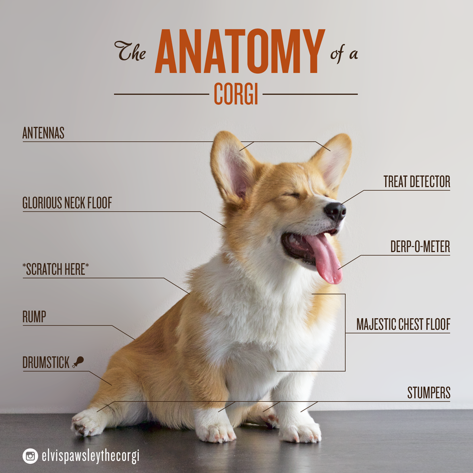
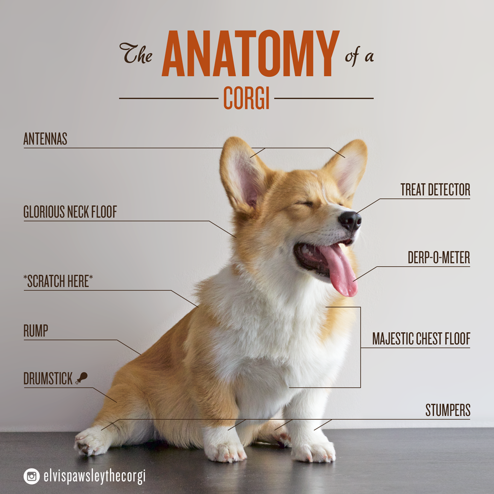

Si pasas encima con el mouse por este parrafo se cambiara el estilo.
Los Corgi galés de Pembroke son inmediatamente identificables por su corta estatura, orejas erguidas y cara de zorro.
Por lo general la cola se corta al ras, pero algunos cachorros nacen sin cola. Además de la obvia diferencia en la cola, los Pembroke no son tan largo o de huesos tan pesados como los Cardina Welsh Corgi.
Los Corgi galés de Pembroke se consideran condrodisplásticos, esto es, tienen la característica de tener las patas arqueadas y tendencia a los problemas de lomo. Un poco más largos que altos, tienen un lomo recto y no son extremos en ningún área. Los adultos miden aproximadamente 10 a 12 pulgadas de alto y pesan entre 23 a 28 libras (10 a 13 kilogramos). Alcanzan su tamaño de adultos al año de edad pero algunos se siguen a completando hasta los dos e inclusive tres años.
Introduce un caracter para cambiar el estilo del parrafo
Los Corgi tienen un manto a prueba de la intemperie - Doble pero corto. El color va desde rojo intenso o amarillo-marrón hasta negro o sable con destellos blancos. Los negros a menudo tienen blanco y canelaado para hacerlos tri-color con cabezas que varían de rojo al negro. Ocasionalmente aparece un Corgi esponjoso en una camada. Esos cachorros tienen un pelaje más largo, suave y esponjoso que el típico. Aunque esos cachorros hacen mascotas maravillosas, ese pelaje no es lo deseado en una exhibió.
Personalidad: Los Corgi galés de Pembroke son conocidos por su ágil inteligencia y contundente voluntad: Son perros activos y animados que no quieren que se les deje de prestar atención. En sus mentes, son perros grandes en cuerpos pequeños. Aún así estos perros pueden manejar ganado mucho más grande que ellos, y para hacerlo usan la velocidad, un mordisco rápido y gran determinación. Como perros de granja en general, los Corgi sin duda cazaban alimañas así como pastoreaban el ganado. Los Corgi necesitan ejercicio y entrenamiento con mano firme pero amable para sacar lo mejor de sus talentos.
Ahora arrastra la siguiente foto al siguiente cuadro:


Los Corgi pueden ser propensos al labrado excesivo y a excavar o mordisquear si se les deja solos mucho tiempo o no se ejercitan suficiente. Quieren ser parte de la familia y no les gusta que los dejen en sus jaulas. La mayoría de los Corgi están bien con otras mascotas y con niños si se les cría juntos. tenga cuidado ya que en ocasiones persiguen y mordisquean los talones de los niños que corren por sus instintos de pastoreo.
Viviendo con:
Los Corgi galés de Pembroke son pequeños perros robustos:
Solamente requieren un rápido acicalamiento semanal excepto en tiempo de muda de pelo. Se les necesita cuidar de no desarrollar obesidad. Estos perros son fáciles de cuidar y les va bien con una mínima cantidad de comida. El peso de más puede ser una tensión adicional en su larga baja espalda.
Presiona el boton para generar una foto despues de 4 segundos
Presiona el boton para generar una foto despues de 4 segundos
- Describe Material design
Material Design es un lenguaje visual que sintetiza los principios de un buen diseño con la innovacion de la tecnológia y ciencia.